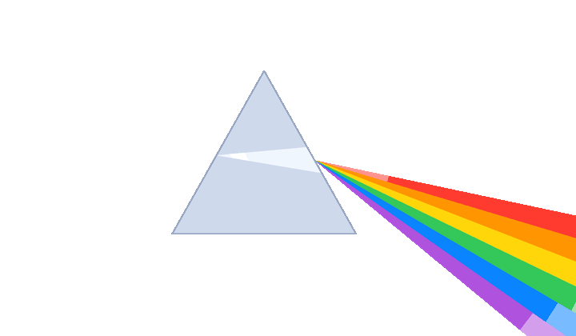
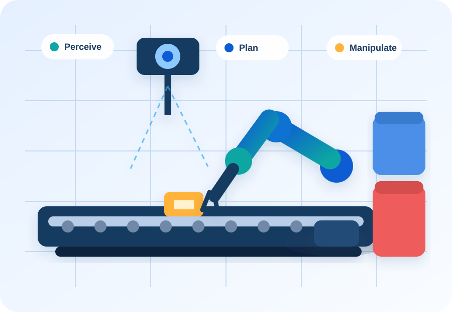
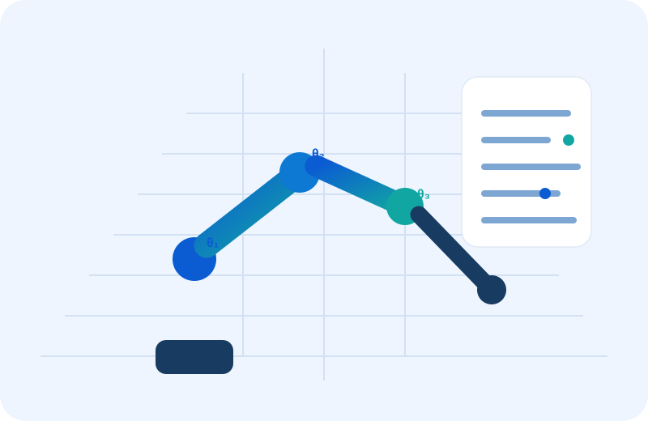
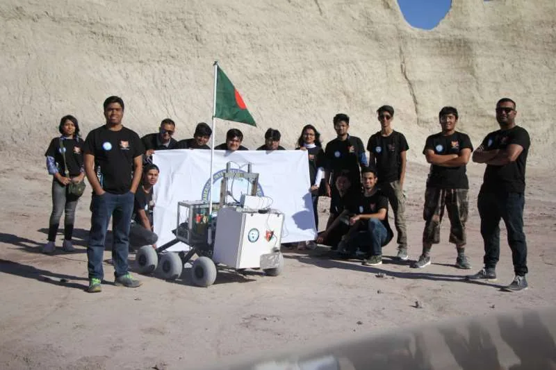
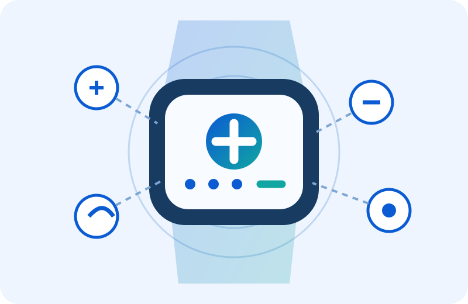
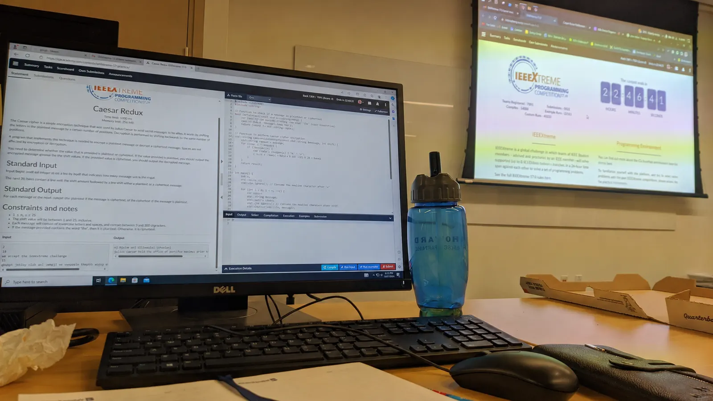
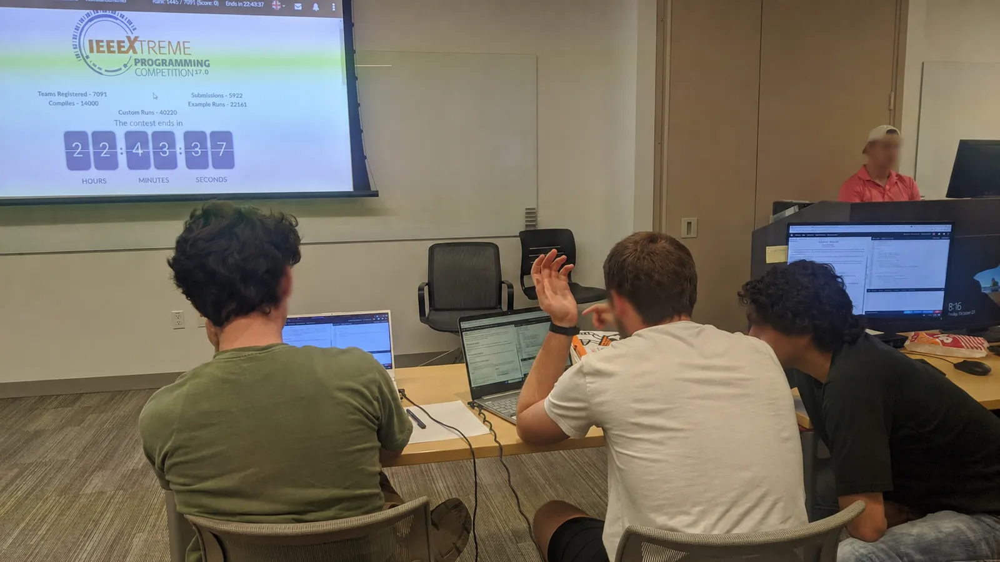
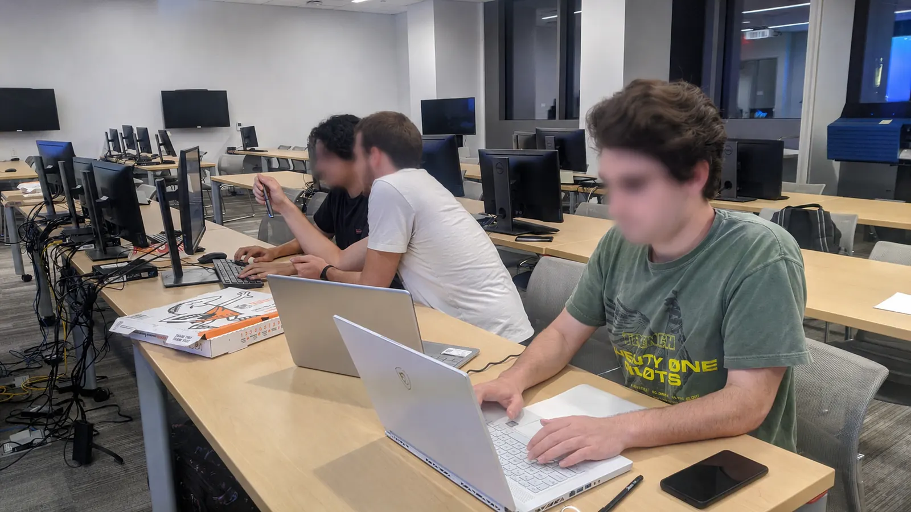
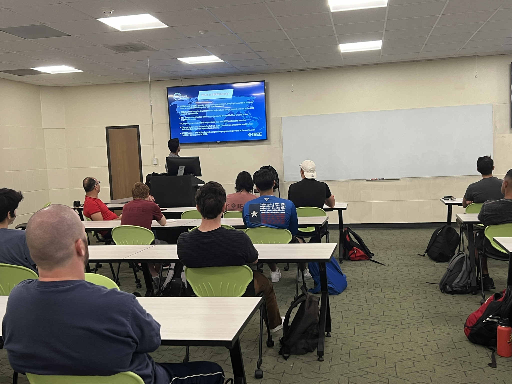

Robotics & AI
ROS 2, MoveIt 2, RGB-D perception, 6DoF pose estimation, motion planning, grasping, and autonomous sorting.
Robotics · Electrical · Automation
I am Shahriar Tasnim, an Electrical and Computer Engineering graduate researcher focused on AI-enabled robotics, embedded systems, industrial automation ans smart manufacturing.

About me
My work combines robotics software, RGB-D perception, electromechanical integration, embedded hardware, and industrial troubleshooting. I earned my Master of Engineering Science in Electrical & Computer Engineering from Lamar University, where my thesis focused on autonomous robotic quality sorting using 6DoF pose estimation and depth-based anomaly detection.
I enjoy taking systems from concept through integration, validation, commissioning, and root-cause analysis. I am especially interested in robotics deployment, field service, automation and controls, and test or validation engineering roles.
ROS 2, MoveIt 2, RGB-D perception, 6DoF pose estimation, motion planning, grasping, and autonomous sorting.
PCB design, sensor and actuator integration, signal debugging, low-voltage systems, and diagnostic instrumentation.
Installation, commissioning, integration testing, troubleshooting, preventive maintenance, and technical support.
Featured projects

Designed an autonomous system integrating RGB-D vision, FoundationPose, depth-based anomaly detection, MoveIt 2 motion planning, and a uFactory xArm5 for quality inspection and pick-and-place sorting.

Developed forward and inverse kinematics models using Denavit-Hartenberg parameters and an interactive visualization workflow for manipulator analysis.
View repository →
Selected among 36 finalist teams and finished 18th worldwide. I contributed to electrical and embedded systems,Re-designed the main control board, power and control circuitry, actuator integration, robotic-arm hardware, and field testing at the Mars Desert Research Station(MDRS) in Utah,USA.
Photo: American International University-Bangladesh (AIUB)

Co-developed an IoT-enabled wearable safety concept combining multiple sensing and communication functions for real-time personal safety support.
Research & publications
IEEE IEMTRONICS · Embedded sensing, IoT communication, and safety-system design.
Results in Engineering · Renewable energy, load forecasting, temporal neural networks, and uncertainty mitigation.
ProQuest Dissertations & Thesis
TENSYMP 2026 · Machine learning for global decarbonization and renewable-energy forecasting.
Experience
Robotics and Intelligent Control Systems Lab · Lamar University
Developed and validated an autonomous robotic quality-sorting platform spanning perception, anomaly detection, motion planning, manipulation, system integration, and fault recovery.
Department of Physics · Lamar University
Analyzed NASA OMNI interplanetary magnetic-field datasets using Python workflows, multi-scale RMS computation, data visualization, and scientific communication.
STATA IT Limited
Supported installation, commissioning, maintenance, PCB design, embedded-hardware validation, customer troubleshooting, low-voltage integration, and networked automation systems.
A A Rashayan Shilpa Limited
Assisted with industrial electrical inspection, maintenance, transformer and breaker commissioning, fault diagnosis, protection testing, and shutdown support.
Leadership & community
Organized and supported the IEEEXtreme 17.0 hackathon through the IEEE Lamar student subsection. I coordinated participant logistics, the competition environment, technical activities, and on-site event support during the 24-hour global programming challenge.



